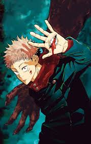
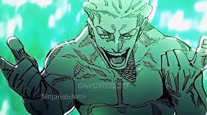
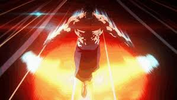
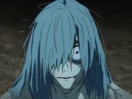

Satoru Gojo es uno de los personajes más importantes de Jujutsu Kaisen y es considerado el hechicero más poderoso de su mundo.
Apariencia
Es muy alto y de complexión atlética.
Tiene el cabello blanco y despeinado.
Sus ojos son de un azul intenso y brillante, una de sus características más llamativas.
Suele llevar una venda negra cubriéndole los ojos o unas gafas oscuras.
Viste un uniforme negro de cuello alto, elegante y sencillo.
Personalidad
Gojo es carismático, bromista y muy seguro de sí mismo. Le gusta hacer comentarios sarcásticos y molestar amistosamente a sus compañeros y alumnos. A primera vista parece despreocupado, pero en realidad se preocupa profundamente por sus estudiantes y por mejorar el sistema de los hechiceros.
Habilidades
Sus poderes son extraordinarios:
🧿Seis Ojos (Six Eyes):** le permiten percibir y controlar la energía maldita con una precisión excepcional.
♾️Limitless (Ilimitado):** una técnica que manipula el espacio.
♾️Infinity (Infinito):** crea una barrera que hace casi imposible tocarlo.
👉🔴🔵👈🤞Hollow Purple (Púrpura Hueco):** uno de sus ataques más destructivos.
🤞🏻♾️🌌Unlimited Void (Vacío Inconmensurable):** su Expansión de Dominio, capaz de abrumar la mente de sus enemigos.
Descripción breve
Un hombre alto de cabello blanco y ojos azules hipnóticos, ocultos tras una venda negra. Su actitud relajada y divertida contrasta con un poder tan inmenso que inspira admiración y temor incluso entre los hechiceros más fuertes.
ŘŸØMĒÑ §ỤƘÛŇĀ
Ryomen Sukuna es el principal antagonista de gran parte de Jujutsu Kaisen. Es conocido como el **Rey de las Maldiciones**, un ser legendario cuya fuerza supera a la de casi cualquier otro personaje de la serie.
Apariencia
Tiene una apariencia intimidante y dominante.
Cuando se manifiesta a través del cuerpo de otro personaje, aparecen marcas negras similares a tatuajes por todo el rostro y el cuerpo.
Posee ojos penetrantes y una expresión fría y cruel.
Su sonrisa suele transmitir arrogancia y desprecio por los demás.
En su forma original, se le describe como una figura monstruosa con múltiples brazos y ojos, lo que refuerza su naturaleza sobrenatural.
Personalidad
Sukuna es despiadado, arrogante y extremadamente violento. Considera a la mayoría de las personas inferiores y rara vez muestra compasión. Disfruta demostrando su poder y suele actuar según sus propios intereses. A diferencia de muchos villanos, no busca necesariamente dominar el mundo; simplemente hace lo que le resulta entretenido o beneficioso.
Habilidades
🌀Posee una cantidad inmensa de energía maldita.
⚡💪🔋Tiene una velocidad, fuerza y resistencia extraordinarias.
🌀Es un genio del combate y de las técnicas malditas.
✂️Puede utilizar poderosos ataques de corte capaces de destruir a sus enemigos con facilidad.
⛩️ 💀🏯💀Su Expansión de Dominio, **Santuario Malévolo**, es una de las más temidas de toda la serie.
Descripción breve
Un ser antiguo y aterrador con marcas negras que recorren su cuerpo, ojos llenos de crueldad y una sonrisa capaz de helar la sangre. Sukuna irradia una presencia dominante y monstruosa, como si cada movimiento suyo recordara por qué es conocido como el Rey de las Maldiciones.
Diferencia visual entre Gojo y Sukuna
Gojo** transmite elegancia, calma y confianza.
Sukuna** transmite peligro, brutalidad y autoridad absoluta.
Por eso muchos fans los ven como opuestos perfectos: el hechicero más poderoso frente a la maldición más poderosa.
✽𝕐𝕦𝕛𝕚 𝕀𝕥𝕒𝕕𝕠𝕣𝕚✽

Yuji Itadori es el protagonista de Jujutsu Kaisen. Es un joven con una fuerza física extraordinaria que termina involucrándose en el mundo de las maldiciones tras convertirse en el recipiente de Ryomen Sukuna, el Rey de las Maldiciones.
Apariencia
Es un adolescente de estatura media-alta y complexión atlética.
Tiene el cabello corto de color rosado con tonos claros.
Sus ojos son marrones y transmiten determinación y amabilidad.
Suele vestir el uniforme de la Escuela Técnica de Hechicería de Tokio.
Su apariencia juvenil contrasta con el enorme poder que alberga en su interior.
Personalidad
Yuji es amable, valiente y muy empático. Siempre intenta ayudar a quienes lo rodean y cree firmemente que todas las personas merecen una muerte digna. Aunque suele ser alegre y amigable, también posee una gran determinación cuando debe proteger a sus amigos o enfrentarse a poderosos enemigos.
Habilidades
💪 Fuerza sobrehumana: posee una capacidad física excepcional incluso sin usar energía maldita.
⚡ Gran velocidad y reflejos: puede reaccionar rápidamente en combate.
👊 Puño Divergente (Divergent Fist): un golpe que combina impacto físico y energía maldita.
⚫ Destello Negro (Black Flash): una técnica avanzada que aumenta enormemente el poder de sus ataques.
👹 Recipiente de Sukuna: alberga dentro de sí al Rey de las Maldiciones, obteniendo acceso a un poder inmenso y peligroso.
Descripción breve
Un joven de cabello rosado y espíritu indomable, cuya bondad y determinación lo impulsan a proteger a los demás. A pesar de cargar con el temible Sukuna en su interior, continúa luchando para salvar vidas y convertirse en un hechicero capaz de cambiar el mundo.
✽𝕄𝕖𝕘𝕦𝕞𝕚 𝔽𝕦𝕤𝕙𝕚𝕘𝕦𝕣𝕠✽
Megumi Fushiguro es uno de los protagonistas de Jujutsu Kaisen y un talentoso estudiante de la Escuela Técnica de Hechicería de Tokio. Es reconocido por su gran potencial como hechicero y por su poderosa Técnica de las Diez Sombras.
Apariencia
Es un joven alto y de complexión delgada.
Tiene el cabello negro, puntiagudo y despeinado.
Sus ojos son de color azul oscuro.
Suele vestir el uniforme negro de hechicero.
Su expresión seria y tranquila refleja su personalidad reservada.
Personalidad
Megumi es serio, inteligente y muy responsable. A diferencia de muchos de sus compañeros, suele mantener la calma y analizar cuidadosamente cada situación. Aunque parece distante, se preocupa profundamente por las personas que considera importantes y está dispuesto a arriesgar su vida para protegerlas.
Habilidades
🐺 Técnica de las Diez Sombras (Ten Shadows Technique): le permite invocar shikigamis utilizando sombras.
🐺 Perros Divinos (Divine Dogs): sus invocaciones más utilizadas para rastrear y combatir enemigos.
🐸 Sapo (Toad): un shikigami capaz de inmovilizar o capturar objetivos.
🐘 Máximum Elephant: una poderosa invocación que libera enormes cantidades de agua.
🦅 Nue: un shikigami volador capaz de atacar con electricidad.
🌑 Expansión de Dominio: Jardín de Sombras Quimera (Chimera Shadow Garden), que potencia sus técnicas y amplía el control de las sombras.
Descripción breve
Un joven hechicero de mirada seria y cabello oscuro, dotado de una de las técnicas más poderosas del mundo del jujutsu. Su carácter reservado, su gran inteligencia y su inquebrantable sentido de la justicia lo convierten en uno de los aliados más valiosos de sus compañeros.
✽𝕂𝕚𝕟𝕛𝕚 ℍ𝕒𝕜𝕒𝕣𝕚✽

Kinji Hakari es uno de los hechiceros más poderosos de Jujutsu Kaisen. Antiguo estudiante de la Escuela Técnica de Hechicería de Tokio, destaca por su personalidad rebelde, su confianza inquebrantable y una técnica maldita única basada en los juegos de azar.
Apariencia
Es un joven alto y de complexión fuerte.
Tiene el cabello oscuro con reflejos teñidos.
Sus rasgos faciales son marcados y suele mostrar una expresión confiada.
Viste ropa moderna y llamativa, alejándose del uniforme tradicional de hechicero.
Su presencia impone respeto y transmite una gran seguridad.
Personalidad
Hakari es carismático, audaz y extremadamente seguro de sí mismo. Le gusta actuar según sus propias reglas y no suele respetar la autoridad cuando considera que está equivocada. Aunque puede parecer impulsivo, posee una gran inteligencia en combate y una fuerte lealtad hacia quienes considera sus aliados.
Habilidades
🎰 Energía maldita excepcional: posee una enorme cantidad de energía maldita.
👊 Gran fuerza física: combina poder, resistencia y velocidad en combate.
🎲 Estilo de lucha impredecible: aprovecha el azar para obtener ventajas decisivas.
♾️ Expansión de Dominio: Idle Death Gamble (Apuesta de Muerte Ociosa), inspirada en una máquina pachinko.
🎉 Jackpot: al obtener el premio mayor dentro de su dominio, recibe energía maldita prácticamente ilimitada durante un tiempo determinado.
🛡️ Regeneración automática: durante el Jackpot, su cuerpo se cura constantemente gracias al flujo infinito de energía maldita.
Descripción breve
Un hechicero rebelde y temerario que vive guiado por la emoción del riesgo. Con una confianza absoluta en sus capacidades y una técnica basada en la suerte, Hakari se convierte en un combatiente casi imparable cuando consigue el premio mayor de su dominio.
✽𝔸𝕠𝕚 𝕋𝕠𝕕𝕠✽

Aoi Todo es uno de los estudiantes más fuertes de la Escuela de Hechicería de Kioto en Jujutsu Kaisen. Es conocido por su increíble fuerza física, su personalidad excéntrica y su pasión por encontrar personas con gustos similares a los suyos.
Apariencia
Es muy alto y posee una musculatura imponente.
Tiene el cabello oscuro recogido en un moño.
Sus ojos son pequeños y transmiten una intensa determinación.
Suele vestir el uniforme de la Escuela de Hechicería de Kioto.
Su presencia física intimida incluso a los hechiceros más experimentados.
Personalidad
Todo es extrovertido, extravagante y extremadamente seguro de sí mismo. Tiene la peculiar costumbre de preguntar a las personas cuál es su tipo ideal de pareja antes de decidir si le agradan. A pesar de su comportamiento extraño, es muy inteligente en combate, un estratega brillante y un compañero leal que valora profundamente la amistad.
Habilidades
💪 Fuerza física monstruosa: posee una de las mayores fuerzas físicas entre los estudiantes de jujutsu.
⚡ Velocidad y resistencia excepcionales: puede enfrentarse a poderosos enemigos durante largos combates.
🧠 Gran inteligencia táctica: analiza rápidamente las habilidades de sus oponentes.
👏 Boogie Woogie: su técnica maldita le permite intercambiar posiciones con otra persona u objeto al dar una palmada.
⚫ Dominio del Black Flash: ha ejecutado esta técnica en múltiples ocasiones con gran precisión.
🤝 Trabajo en equipo sobresaliente: destaca por coordinarse perfectamente con sus aliados durante el combate.
Descripción breve
Un gigantesco hechicero de increíble fuerza y personalidad extravagante. Aunque suele actuar de manera impredecible y cómica, es un guerrero brillante capaz de inspirar a sus aliados y enfrentarse a enemigos extremadamente peligrosos con una sonrisa en el rostro.
✽𝕄𝕒𝕙𝕚𝕥𝕠✽

Mahito es una de las maldiciones más peligrosas y principales antagonistas de Jujutsu Kaisen. Nacido del odio y el miedo que los humanos sienten entre sí, posee una naturaleza cruel y una curiosidad obsesiva por la esencia del alma humana.
Apariencia
Posee una apariencia humanoide alta y delgada.
Tiene el cabello gris azulado y despeinado.
Sus ojos muestran una expresión juguetona y perturbadora.
Su cuerpo está cubierto por marcas que parecen costuras.
Suele vestir ropa oscura y holgada.
Personalidad
Mahito es manipulador, sádico y extremadamente cruel. Considera a los humanos simples juguetes para experimentar y no siente remordimiento por sus acciones. A pesar de su naturaleza malvada, es inteligente, adaptable y aprende rápidamente de cada combate, convirtiéndose en una amenaza cada vez mayor.
Habilidades
🌀 Transfiguración Ociosa (Idle Transfiguration): altera la forma del alma de una persona para modificar su cuerpo a voluntad.
👤 Manipulación del alma: puede transformar partes de su propio cuerpo para atacar o defenderse.
♻️ Regeneración avanzada: puede reconstruir su cuerpo modificando la forma de su alma.
👹 Creación de humanos transfigurados: convierte a sus víctimas en monstruos deformes bajo su control.
⚡ Gran inteligencia en combate: evoluciona y mejora constantemente durante las batallas.
🌌 Expansión de Dominio: Self-Embodiment of Perfection (Autoencarnación de la Perfección), que garantiza el contacto con el alma de sus objetivos.
Descripción breve
Una maldición de apariencia humana con una sonrisa inquietante y una mente retorcida. Su capacidad para manipular almas y su constante evolución lo convierten en uno de los enemigos más aterradores y peligrosos del mundo del jujutsu.